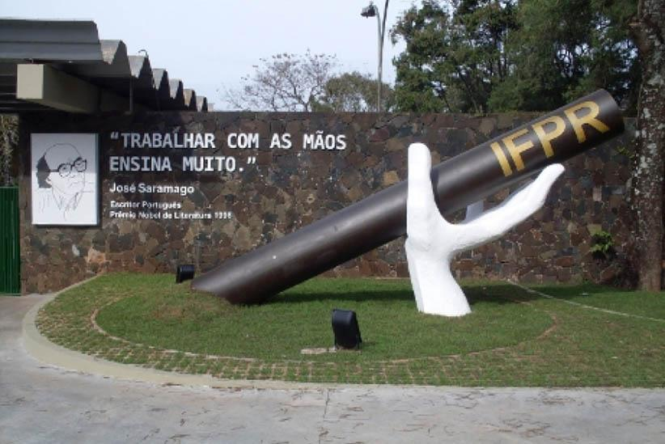
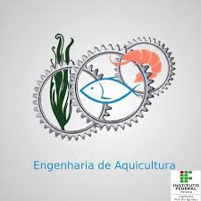
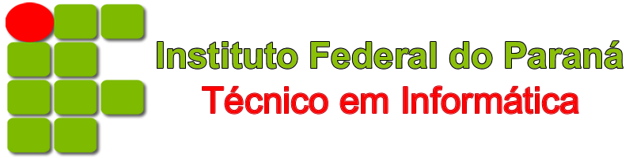

|  | ||
Laboratório MakerConheça o Laboratório Maker, do Campus Foz do Iguaçu, espaço multidisciplinar onde são desenvolvidos projetos de inovação tecnológica em diferentes áreas do conhecimento.
|
Links para pagina oficial dos cursos do IFPR |
|
Cursos |
||

Técnico em AquiculturaAquicultura, é a ciência que estuda e desenvolve técnicas de cultivo, manejo e reprodução de organismos aquáticos, como peixes (Piscicultura); camarões (Carcinicultura); rãs (Ranicultura); moluscos: ostras e mexilhões (Malacocultura); algas e até tartarugas e jacarés. |
Técnico em EdificaçõesO Técnico em Edificações é habilitado como um técnico da área da construção civil, tendo sua habilitação registrada junto ao CREA. |

Técnico em InformáticaO Técnico em Meio Ambiente é habilitado como um técnico da área de gestão de recursos naturais e na execução de atividades ligadas à área ambiental. |
Localização |
||
|
IFPR - Instituto federal do Parana - Todos os direitos reservados |
||